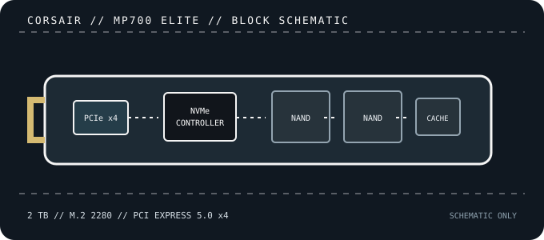

[ PCIE 5.0 NVME DRIVES // IDENTIFIED PRODUCT ]
CORSAIR MP700 ELITE 2 TB (CSSD-F2000GBMP700ENH)
2 TB PCIe 5.0 x4 NVMe module using CORSAIR’s lower-power MP700 ELITE design. CSSD-F2000GBMP700ENH identifies the no-heatsink retail configuration.

IDENTIFICATION: Confirm the printed model code, capacity, suffix, hardware revision and firmware against the actual drive. Similar family names can denote different heatsinks, controller platforms and performance. Values here identify the cited 2 TB SKU and remain subject to the linked manufacturer documentation.
Manufacturer-identified specifications
| Model / manufacturer code | CORSAIR MP700 ELITE 2 TB (CSSD-F2000GBMP700ENH) — CSSD-F2000GBMP700ENH |
|---|---|
| Capacity / physical format | 2 TB; M.2 2280, bare / no integrated heatsink |
| Interface / lane width | PCI Express 5.0 x4; backward operation depends on host PCIe/NVMe support. |
| Protocol | NVMe command protocol; exact revision and optional features depend on drive firmware and host support. |
| Vendor-rated sequential performance | Up to 10,000 MB/s read / 8,500 MB/s write; peak ratings, not sustained guarantees. |
| Endurance / warranty | 1,200 TBW; 5-year limited warranty |
| Controller / flash | Phison E31T (DRAM-less, HMB); 3D TLC NAND. Component details can vary by production revision; use the exact drive label and current manufacturer documentation. |
| Cooling / package note | The ENH SKU is the no-heatsink version; CORSAIR also sells a different heatsink SKU. Install with the host-recommended thermal solution and do not stack it with an incompatible motherboard cover. |
Compatibility, installation & service
- Install in a compatible M.2 2280 NVMe socket with PCIe 5.0 x4 for peak performance. It can negotiate down on supported PCIe 4.0/3.0 systems; platform routing determines the link.
- This exact ENH part number has no integrated heatsink. Follow the CORSAIR installation advice and host manual for thermal pads and covers; do not confuse it with the separate EHS heatsink SKU.
- The E31T design uses Host Memory Buffer rather than onboard DRAM; host OS/driver support is relevant. Check UEFI NVMe boot, M.2 lane sharing and current firmware guidance.
- Before replacing a boot drive, create a recoverable backup and confirm OS recovery media, encryption keys and firmware settings. Follow clean shutdown and electrostatic-discharge precautions; do not hot-plug M.2 unless the platform manual explicitly supports it.
Product references
- CORSAIR — MP700 ELITE 2 TB (CSSD-F2000GBMP700ENH)Official bare-module product listing and specifications.
- TechPowerUp — Corsair MP700 ELITE 2 TB reviewIndependent benchmarks, power and thermal review.
Manufacturer ratings are capacity- and test-condition-specific. Independent tests characterize only the tested sample and workload. Consult current manuals and support portals for revisions, fit, firmware and warranty conditions.